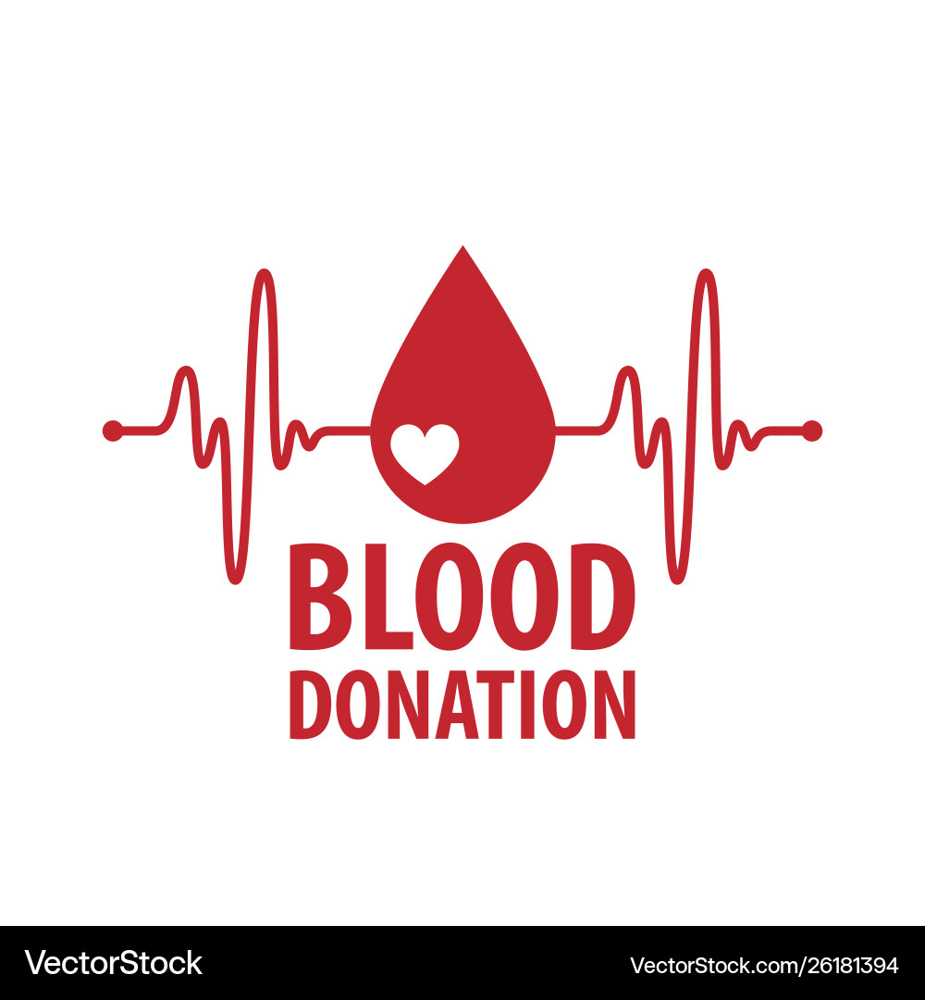
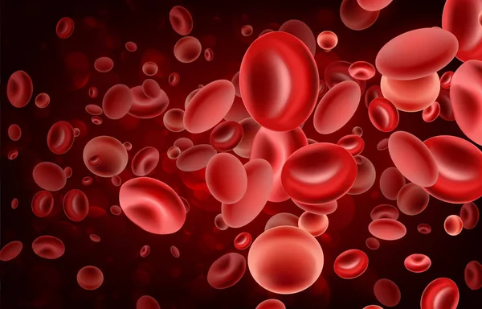

Why Blood Donation is Important
Blood donation is a life-saving act. Every two seconds, someone in the U.S. needs blood. A single donation can save up to three lives. Blood transfusions are essential in surgeries, cancer treatments, traumatic injuries, and chronic illnesses.

Whole Blood Donation
Whole blood donation is the most common type of donation. It is used in emergency cases and surgeries. You can donate whole blood every 56 days.

Platelet Donation
Platelets are crucial for treating cancer patients and those with blood clotting disorders. You can donate platelets every 7 days, up to 24 times a year.

Plasma Donation
Plasma helps people with severe burns, trauma, and clotting disorders. You can donate plasma every 28 days.